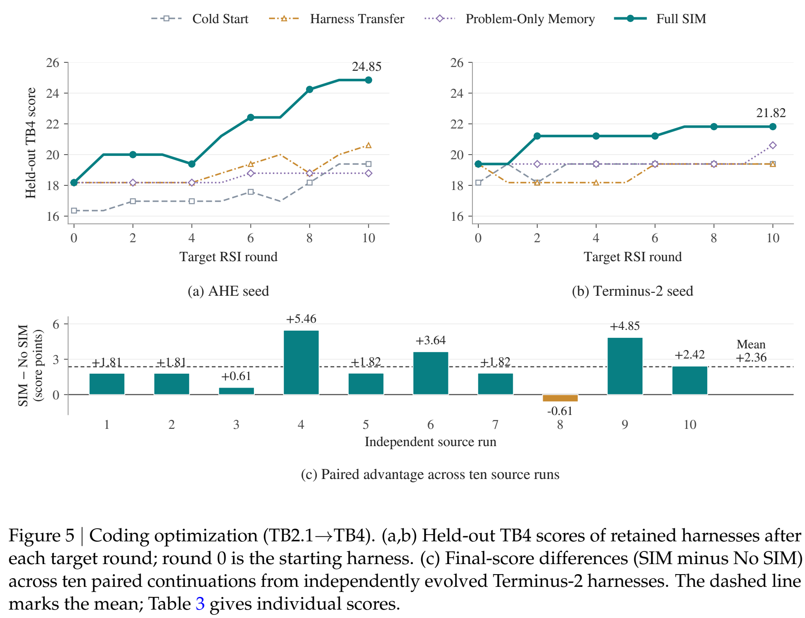

“Why is this check here?”
if command_succeeded:
verify_completion()
verify_completion()
The code survives. The diagnosis, rejected alternatives and conditions behind the edit may not. The next optimizer has to reconstruct its purpose.
When the model or benchmark changes, carry forward the experience behind your agent’s improvements.
Self-Improvement Memory Enables
Continual Recursive Self-Improvement · Preprint, 2026
¹ Google Cloud AI ² Google DeepMind ³ Google Cloud AI Research ⁴ The Pennsylvania State University
Work done during Xin Yu’s internship at Google.
An agent’s harness organizes its prompts, tools, context and execution. Optimizing that layer produces more than code: it produces reasons, failed attempts and evidence. A model or task change makes that history useful again.
The code survives. The diagnosis, rejected alternatives and conditions behind the edit may not. The next optimizer has to reconstruct its purpose.
A completion check can retain its rationale while adapting to a new task’s constraints. New evidence extends the record instead of replacing its history.
CRSI continues an existing optimization run after a compatible benchmark or policy-model change. SIM is memory for the harness optimizer, rather than memory supplied to the task-solving policy.
SIM groups selected edits by recurring harness problem. Both the proposer and the selector read the record. Further attempts add to it—even when a prediction misses or an edit regresses.
A compact example based on the paper’s completion-verification case. This is an explanation, not a raw exported SIM entry.
Read earlier edits, outcomes and the settings in which they were tested.
Refer to an existing problem or identify a new one.
Use evolve-set feedback to select a harness revision.
Record the selected edit and measured outcome; preserve prior attempts.
Held-out evaluation remains outside the optimization loop. The current implementation reads the complete SIM, without retrieval or truncation. Method · §3 ↗
Ten independent Terminus-2 source runs on TB2.1. Each evolved harness initializes two matched, ten-round TB4 continuations: one with SIM and one without. The source run is the unit of analysis.
Mean final-score advantage over harness-only continuation. SIM finishes higher in nine pairs; one favors no SIM.
95% CI [1.05, 3.68]
Paired t-test · p = 0.003
10 independent source runs
One bar per independent source run. Amber marks the negative pair.
Reported paired mean uses unrounded scores; displayed endpoints are rounded.
| Run | Start | No SIM | SIM | Δ |
|---|

Source: paper §4.4, Table 3 and Figure 5. Starting harness, target policy, benchmark, rounds and candidate budgets match within each pair. Read the comparison ↗
Explore the direct memory comparison. All three continuation conditions inherit the same source-evolved harness; the task-solving policy, target tasks, rounds and candidate budgets are matched.
These main setting comparisons use one complete optimization run per condition, with five rollouts per task. They describe these settings; they are not ten independent repetitions per domain. Scores use each benchmark’s scale and should not be averaged across domains.
Paper Figures 3–4 & Tables 5–6 ↗The study tests whether a record of earlier optimization helps continued search. It does not establish unbounded self-improvement, universal transfer, or the isolated causal effect of every memory field.
Read the full setup and limitations ↗The source-evolved harness must remain executable in the target setting. Arbitrary changes of task or interface are outside the evaluated scope.
Equal optimization rounds do not establish equal token use or wall-clock cost. SIM is read in full, so scaling the memory has a cost.
One coding pair favors no SIM. In the Gemini generation chain, CRSI also finishes 0.8 points below fresh RSI on Gemini 4 Argon (Table 1).
The results are reported by the authors. Independent source-run repetition is concentrated in the dedicated ten-pair coding study.
The paper contains the full method, settings, case studies and result tables. This page is a companion to the November 13, 2026 preprint.
Self-Improvement Memory Enables Continual Recursive Self-Improvement
arXiv ↗ PDF ↗Discuss how optimization experience can carry forward when agent systems move to new models or benchmarks.
Hugging Face Papers ↗@misc{yu2026selfimprovementmemory,
title={Self-Improvement Memory Enables Continual Recursive Self-Improvement},
author={Xin Yu and Fei Xia and Jiaqi Pan and Youbao Tang and Chengzhi Liu
and Adams Yu and Sicong Jiang and Yanfei Chen and Lingzhou Xue and Ting Yu},
year={2026},
eprint={2611.18856},
archivePrefix={arXiv},
primaryClass={cs.LG},
url={https://arxiv.org/abs/2611.18856}
}No public implementation is linked here. The interactive record is illustrative; charts reproduce reported paper values. Download the visual overview ↗